利用Hexo框架从零开始搭建个人博客
安装框架
安装Node.js、Hexo、Git
安装Git
在Git - Downloads (git-scm.com)下载电脑对应的版本的Git并安装
安装nvm
下载地址：
1
https://github.com/coreybutler/nvm-windows/releases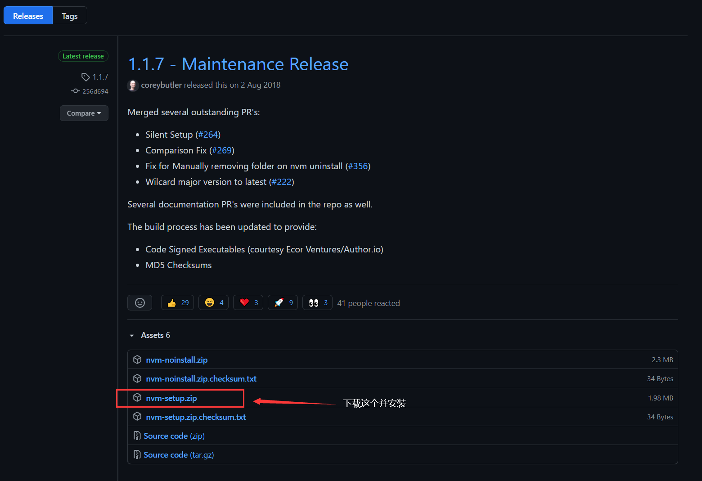
利用nvm安装指定的node.js版本
查看电脑中已有的node.js版本情况
cmd输入命令：
1
nvm list控制台输出：
1
2
3C:\Users\jett>nvm list
* 12.18.3 (Currently using 64-bit executable)查看可安装的node.js版本
cmd中输入命令
1
nvm list available控制台输出
1
2
3
4
5
6
7
8
9
10
11
12
13
14
15
16
17
18
19
20
21
22
23
24
25
26C:\Users\jett>nvm list available
| CURRENT | LTS | OLD STABLE | OLD UNSTABLE |
|--------------|--------------|--------------|--------------|
| 16.4.0 | 14.17.1 | 0.12.18 | 0.11.16 |
| 16.3.0 | 14.17.0 | 0.12.17 | 0.11.15 |
| 16.2.0 | 14.16.1 | 0.12.16 | 0.11.14 |
| 16.1.0 | 14.16.0 | 0.12.15 | 0.11.13 |
| 16.0.0 | 14.15.5 | 0.12.14 | 0.11.12 |
| 15.14.0 | 14.15.4 | 0.12.13 | 0.11.11 |
| 15.13.0 | 14.15.3 | 0.12.12 | 0.11.10 |
| 15.12.0 | 14.15.2 | 0.12.11 | 0.11.9 |
| 15.11.0 | 14.15.1 | 0.12.10 | 0.11.8 |
| 15.10.0 | 14.15.0 | 0.12.9 | 0.11.7 |
| 15.9.0 | 12.22.1 | 0.12.8 | 0.11.6 |
| 15.8.0 | 12.22.0 | 0.12.7 | 0.11.5 |
| 15.7.0 | 12.21.0 | 0.12.6 | 0.11.4 |
| 15.6.0 | 12.20.2 | 0.12.5 | 0.11.3 |
| 15.5.1 | 12.20.1 | 0.12.4 | 0.11.2 |
| 15.5.0 | 12.20.0 | 0.12.3 | 0.11.1 |
| 15.4.0 | 12.19.1 | 0.12.2 | 0.11.0 |
| 15.3.0 | 12.19.0 | 0.12.1 | 0.9.12 |
| 15.2.1 | 12.18.4 | 0.12.0 | 0.9.11 |
| 15.2.0 | 12.18.3 | 0.10.48 | 0.9.10 |
This is a partial list. For a complete list, visit https://nodejs.org/download/release选择一个node.js版本进行安装(12.18.3)
1
nvm install 12.18.3查看是否安装成功
1
node -v提示如下，说明安装成功
1
2C:\Users\jett>node -v
v12.18.3安装hexo
1
npm install -g hexo-cli可能出现的问题：
1
2
3
4C:\Users\jett>npm install -g hexo-cli
D:\Program Files\nodejs\hexo -> D:\Program Files\nodejs\node_modules\hexo-cli\bin\hexo
npm WARN optional SKIPPING OPTIONAL DEPENDENCY: fsevents@~2.3.2 (node_modules\hexo-cli\node_modules\chokidar\node_modules\fsevents):
npm WARN notsup SKIPPING OPTIONAL DEPENDENCY: Unsupported platform for fsevents@2.3.2: wanted {"os":"darwin","arch":"any"} (current: {"os":"win32","arch":"x64"})此警告并不是表明真的有什么问题，只是你的某些包依赖
fsevents包,而fsevents包是MacOS系统下，在Windows/Linux下会提示警告，但不会安装。处理方法：忽略。
至此，框架已经安装完毕。
博客初始化
在D盘目录Github下新建文件夹JettsBlog，在此目录下进入cmd，然后执行
1
hexo init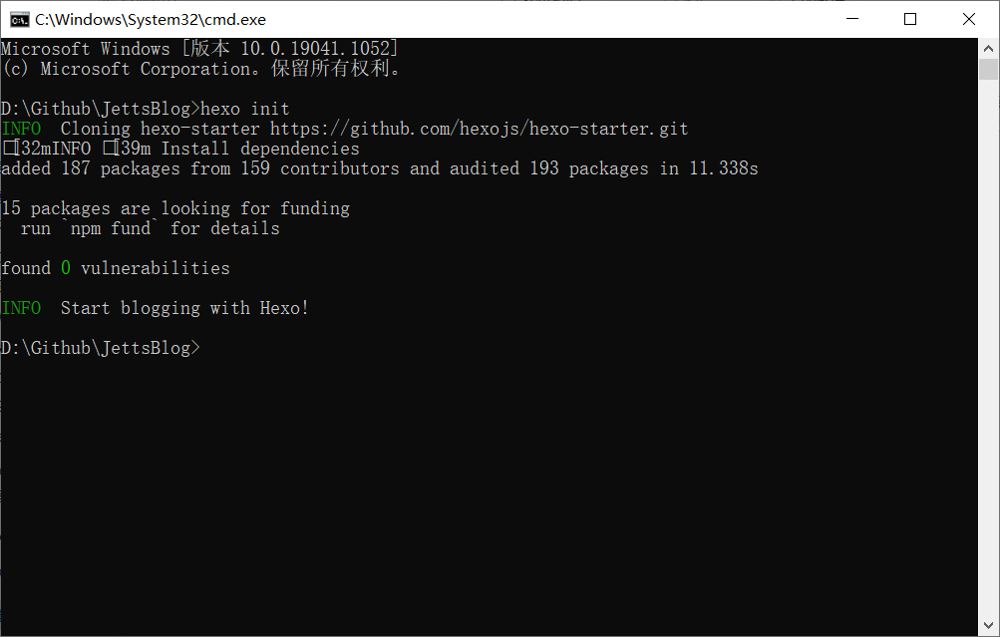
查看Hexo是否搭建好，运行本地的Hexo服务器
1
hexo s控制台信息：
1
2
3
4D:\Github\JettsBlog>hexo s
INFO Validating config
INFO Start processing
INFO Hexo is running at http://localhost:4000 . Press Ctrl+C to stop.在浏览器访问http://localhost:4000
](http://localhost:4000){kind=link}
开始配置博客
下载一个主题
在Themes | Hexo中选择一个主题(Fluid)
根据主题的项目文档进行主题的安装与配置
安装主题
1
npm install --save hexo-theme-fluid然后在博客目录下创建
_config.fluid.yml，将主题的 _config.yml 内容复制进去。此文件可以在本地主题文件夹D:\Github\JettsBlog\node_modules\hexo-theme-fluid下找到。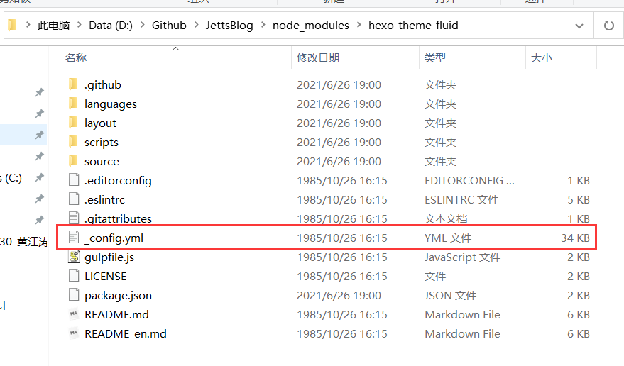
在D:\Github\JettsBlog即项目的最外层目录下新建_config.fluid.yml文件
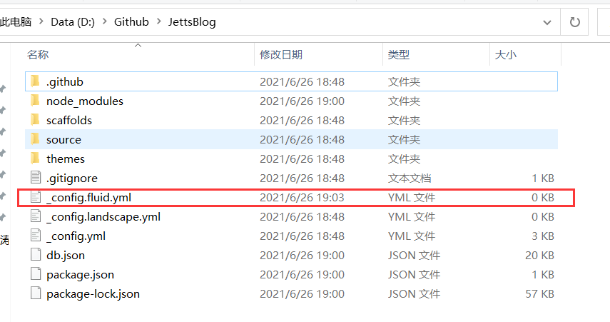
将主题目录下的_config.yml 中的内容复制到_config.fluid.yml文件中
修改 Hexo 博客目录中的
_config.yml1
theme: fluid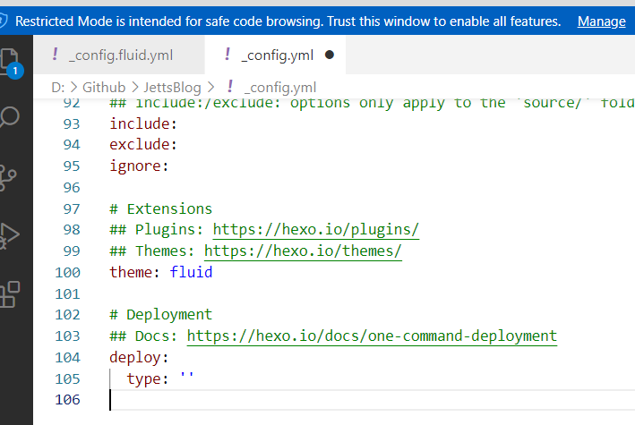
创建关于页
1
hexo new page about在博客的source文件夹下的about文件夹下找到index.md
在Front-matter后添加
1
layout: about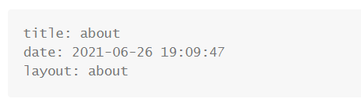
至此，博客的主题已经初始化完成。
接下来需要根据自己的需要更改主题文件中的配置，比如网站标题，背景图片，相关内容等
主题的配置详细教程见主题项目的相关文档fluid-dev/hexo-theme-fluid: 一款 Material Design 风格的 Hexo 主题 / An elegant Material-Design theme for Hexo (github.com)
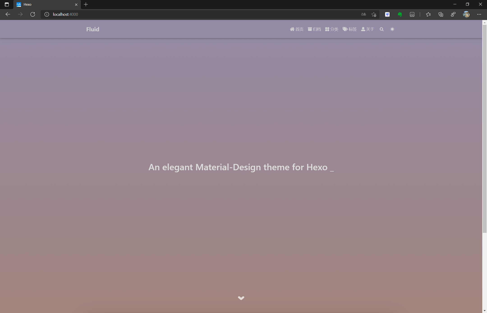
将博客部署到网上
在github上创建一个仓库，名字严格按照格式：xxxx.github.io，其中xxx就是你注册GitHub的用户，例如
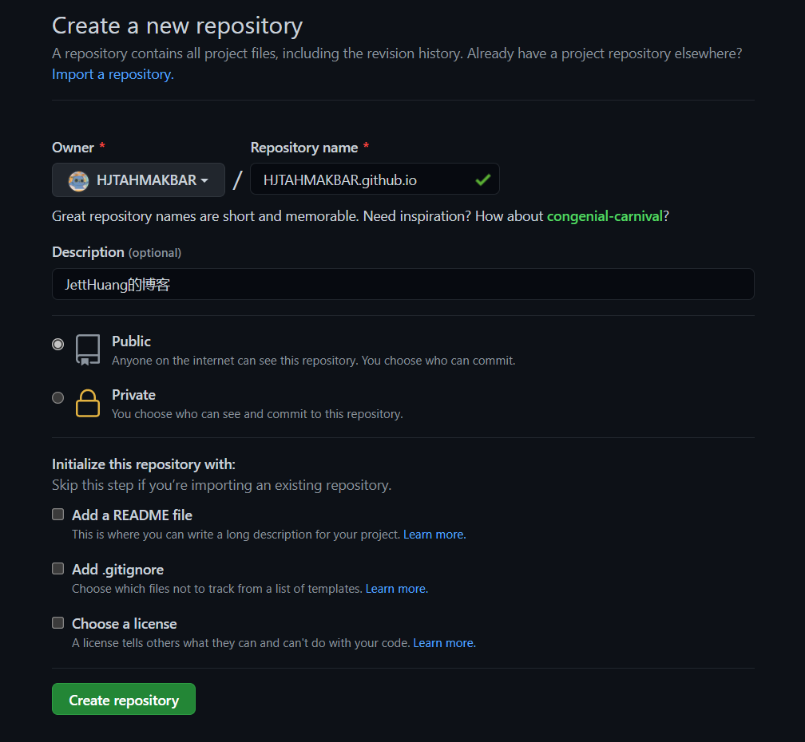
打开git bash
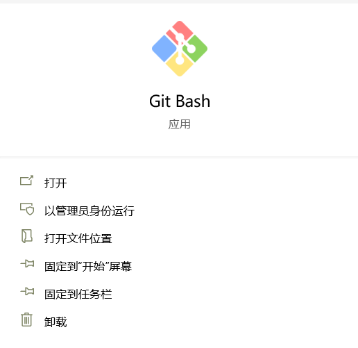
创建密钥
将自己的邮箱替换命令中的youremail项
1
ssh-keygen -t rsa -C "youremail"git bash输出信息：
1
2
3
4
5
6
7
8
9
10
11
12
13
14jett@HUAWEI-Huang MINGW64 ~
$ ssh-keygen -t rsa -C "2277401179@qq.com"
Generating public/private rsa key pair.
Enter file in which to save the key (/c/Users/jett/.ssh/id_rsa):
Created directory '/c/Users/jett/.ssh'.
Enter passphrase (empty for no passphrase):
Enter same passphrase again:
Your identification has been saved in /c/Users/jett/.ssh/id_rsa
Your public key has been saved in /c/Users/jett/.ssh/id_rsa.pub
The key fingerprint is:
(这里是你的key fingerprint和邮箱)
The key's randomart image is:
(这里是你的key's randomart image)查看生成的密钥文件
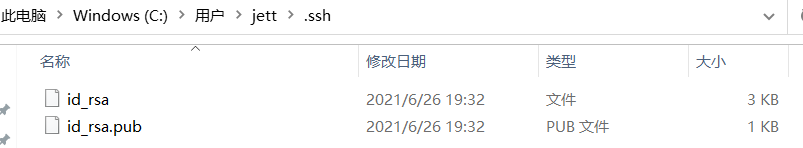
id_rsa是你这台电脑的私人秘钥，不能给别人看的，id_rsa.pub是公共秘钥，可以随便给别人看。把这个公钥放在GitHub上，这样当你链接GitHub自己的账户时，它就会根据公钥匹配你的私钥，当能够相互匹配时，才能够顺利的通过git上传你的文件到GitHub上。在Github进行设置
在GitHub的setting中，找到SSH keys的设置选项，点击
New SSH key把你的id_rsa.pub里面的信息复制进去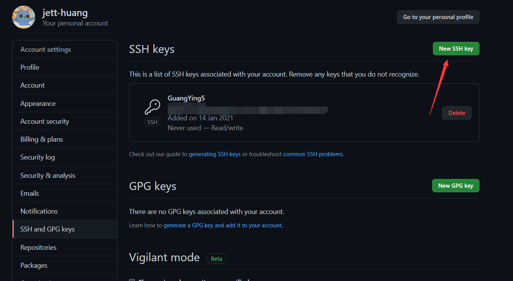
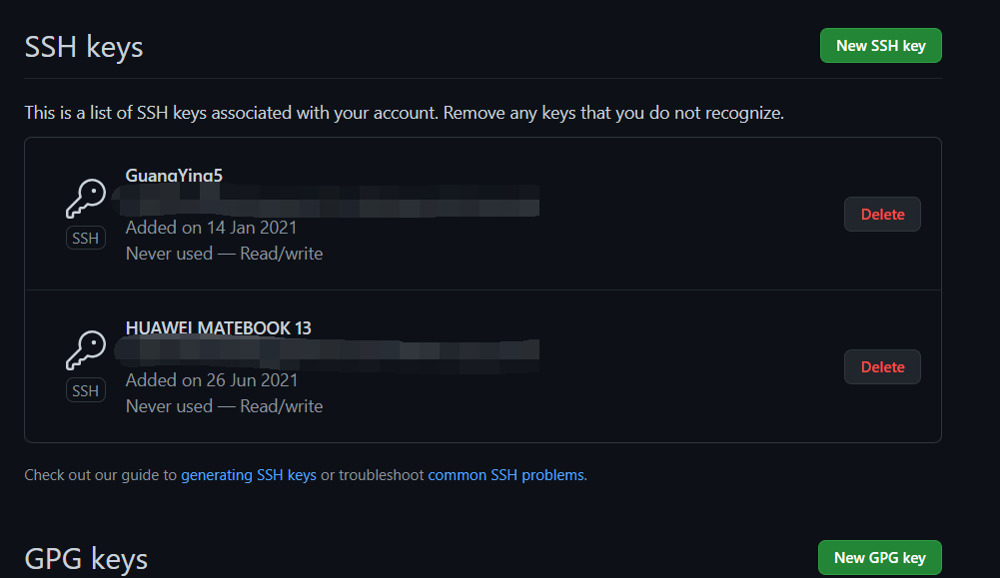
将Hexo部署到Github
打开站点配置文件
_config.yml，在最后的修改信息如下1
2
3deploy:
type: git
repo: https://github.com/HJTAHMAKBAR/HJTAHMAKBAR.github.io.git其中repo中的地址是博客的GitHub项目地址，也就是刚才所新建的仓库地址
安装部署插件
1
npm install hexo-deployer-git --save执行部署命令
1
2
3
4hexo clean (清楚生成的public文件夹，public中就是要上传到Github的内容，即渲染出的网页的文件)
hexo generate (可简写为hexo g)
hexo deploy (可简写为hexo d)
(后面两行命令可以简写为hexo d -g)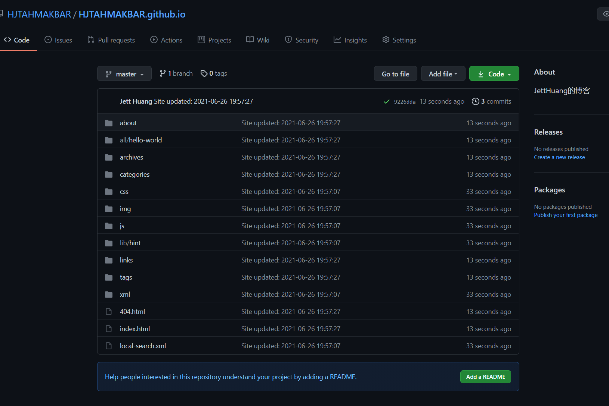
至此，本地的Hexo已经部署到Github上
开启Github Pages
在项目的Settings下的Pages中，可以看到博客的地址
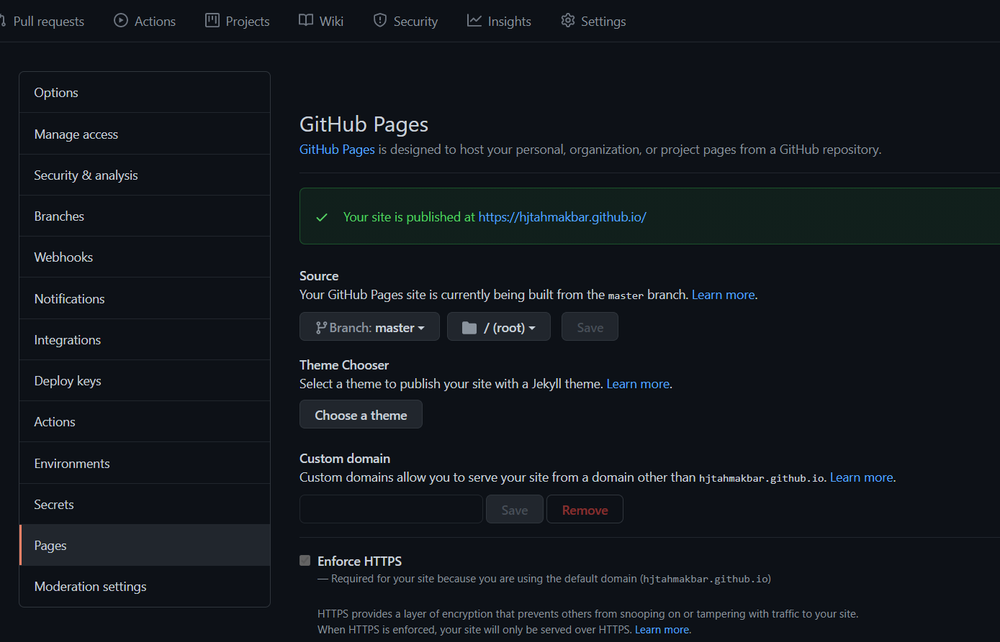
此时，已经可以通过这个地址在线访问自己的博客了
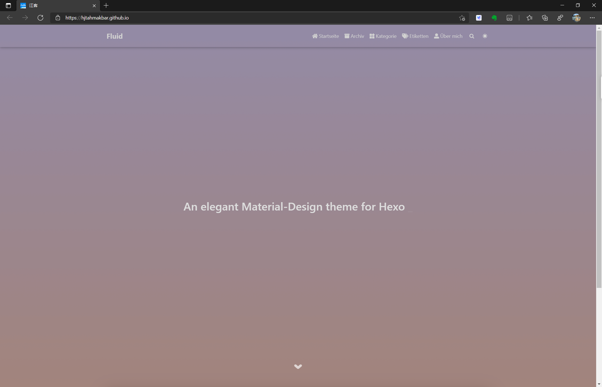
为博客绑定一个域名
购买域名(阿里云)
在域名注册_域名查询_域名申请_域名购买_域名续费_国际域名-万网-阿里云旗下品牌 (aliyun.com)中购买一个自己想要的域名
ping自己的博客地址
在本地的cmd上执行
其中xxx是GitHub账号名
1
ping xxx.github.io例如：
1
2
3
4
5
6
7
8
9
10
11
12C:\Users\jett>ping hjtahmakbar.github.io
正在 Ping hjtahmakbar.github.io [185.199.111.153] 具有 32 字节的数据:
来自 185.199.111.153 的回复: 字节=32 时间=40ms TTL=52
来自 185.199.111.153 的回复: 字节=32 时间=41ms TTL=52
来自 185.199.111.153 的回复: 字节=32 时间=41ms TTL=52
来自 185.199.111.153 的回复: 字节=32 时间=40ms TTL=52
185.199.111.153 的 Ping 统计信息:
数据包: 已发送 = 4，已接收 = 4，丢失 = 0 (0% 丢失)，
往返行程的估计时间(以毫秒为单位):
最短 = 40ms，最长 = 41ms，平均 = 40ms其中185.199.111.153是我们需要的服务器地址
解析域名
在阿里云的控制台中找到云解析DNS(域名解析)
添加两条记录
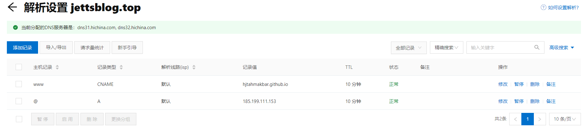
在GitHub Pages设置我们的域名
填入自己的域名
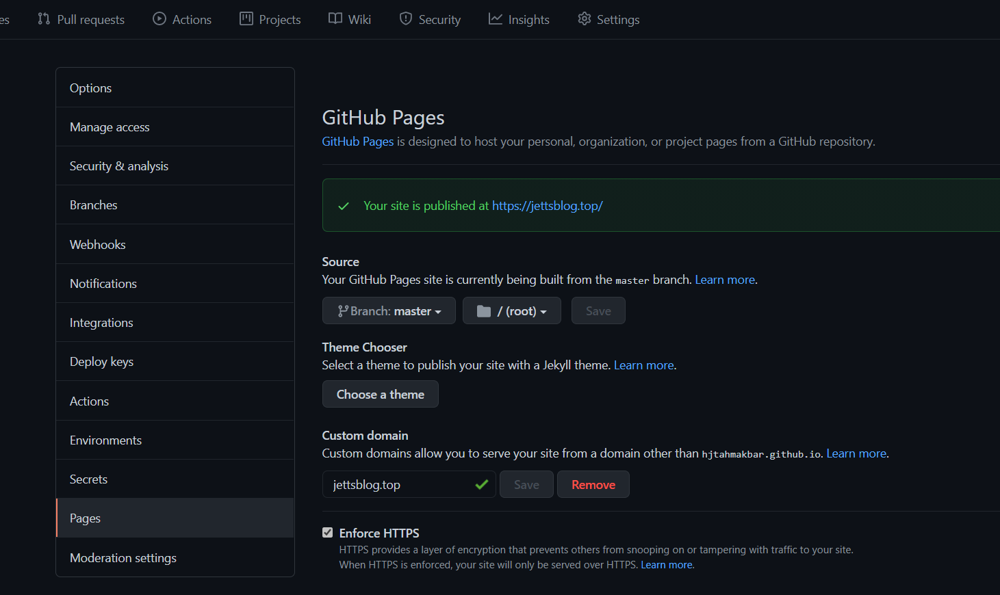
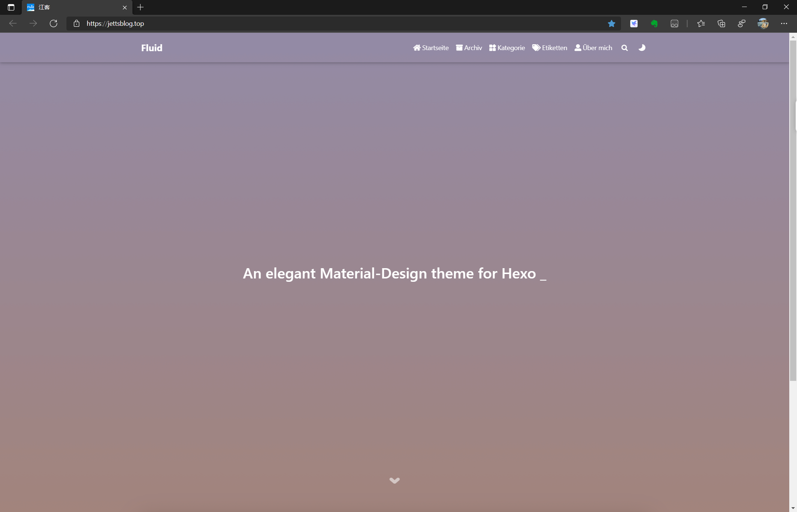
大功告成，至此，我们已经可以通过域名访问我们的博客！
接下来，就可以开始写文章，以及对博客的配置和功能的更改！
后续操作
- 博客各板块信息显示
- 安装评论插件
- 配置在线MarkDown编辑
- 文章插入图片
- 将博客收录与百度、必应、谷歌等搜索引擎
本博客所有文章除特别声明外，均采用 CC BY-SA 4.0 协议 ，转载请注明出处！